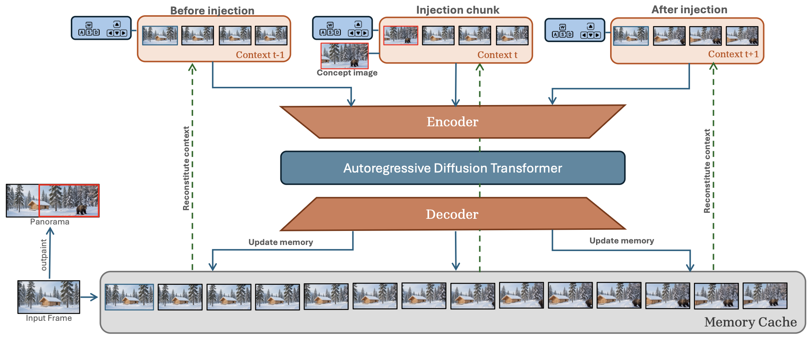
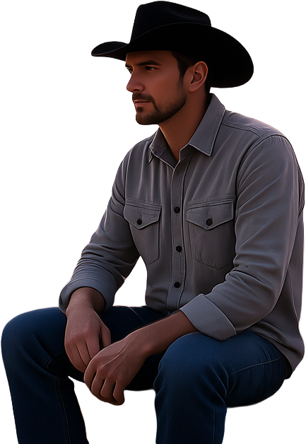
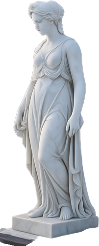

Virginia Tech
We introduce SPAWN (Swapping Pinned Anchor with Windowed iNjection), a training-free method for concept spawning. We define concept spawning as introducing a user-specified visual concept into a world model, analogous to spawning in a game engine. SPAWN exploits a structural property of image-to-video backbones: the first slot of the context memory is pinned to the reference frame and acts as a foundational anchor for every generated chunk. By swapping this anchor with an external concept latent over a short injection window and letting the original anchor return, we cause the concept to propagate naturally through the rollout via the model's own memory. SPAWN supports concepts from fine-grained entities such as characters and props to large-scale elements such as buildings and landmarks, and accepts either a concept image or a text description as input. Experiments show that SPAWN integrates concepts with consistent lighting, scale, and perspective while preserving identity and temporal coherence, demonstrating that controllable concept spawning is achievable in existing autoregressive world models without any training.

Method overview. At each rollout step, the context memory Ct is reconstituted from the memory cache and passed through the encoder, autoregressive diffusion transformer, and decoder to produce the next chunk. At a specified injection step (t), we replace the anchor slot of Ct with a concept latent before encoding; the concept then persists in subsequent steps.


to the left